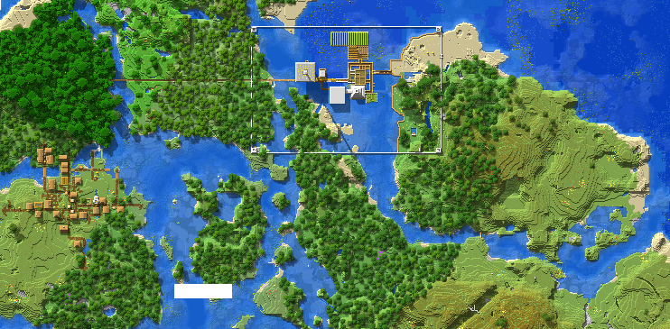
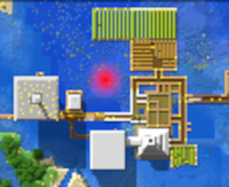
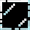
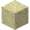
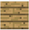

Shadowlynx Plan
Table of Contents
Map date:20/12/23

Build Ideas [0/2]
[ ] first
- MAP 
- building a second trade hall in the red colored place in the image then connect the first trade hall with the second one with a sky bridge.
TODO build requirements [0/2]
- THE reason to build is (last time I got kill by a little drown with his trident and I couldn’t get my items back that easy + it’s more annoying then my little brother).
[ ]we need woods, so to get some woods we have to mine tree and cut our half wooden bridge(South) then replace it with dirt.- estimated woods stacks 35-40
[ ]also we need some cobble store- estimated cobble store stacks 5-7
TODO Second [ ]
- replace the wooden fence with  (2 block height) also build some fences around the small islands.
TODO build requirements
[0/2]convert the  by the into the then make it “glass panes”[ ]estimated stacks 35-40[ ]estimated stacks 15-20 (also convert to )